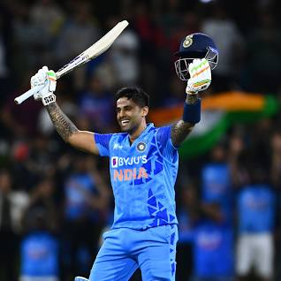
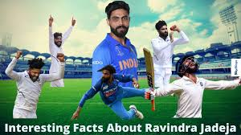
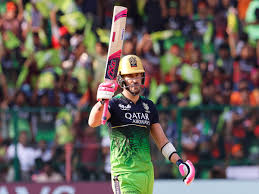

Players
VIRAT KOHLI
AB de Villiers
Suriyakumar
Rohit sharma
Mahendra Singh Dhoni
Suresh raina
Ravindra Jadeja
Jasprit Bumrah
Dalesteyn
Faf du plessis
VIRAT KOHLI

Virat Kohli (Hindi pronunciation: [ʋɪˈɾɑːʈ ˈkoːɦli] (listen); born 5 November 1988) is an Indian international cricketer and the former captain of the Indian national cricket team who plays as a right-handed batsman for Royal Challengers Bangalore in the IPL and for Delhi in Indian domestic cricket.
Widely regarded as one of the greatest batsmen of all time,[4] Kohli holds the records for scoring most runs in T20 internationals and in the IPL.
In 2020, the International Cricket Council named him the male cricketer of the decade.
Kohli has also contributed to India's successes, including winning the 2011 World Cup and the 2013 Champions trophy.
AB de Villiers
Abraham Benjamin de Villiers (born 17 February 1984) is a former South African international cricketer.
AB de Villiers was named as the ICC ODI Player of the Year three times during his 15-year international career and was one of the five Wisden cricketers of the decade at the end of 2019.
Suriyakumar
Suryakumar Ashok Yadav (born 14 September 1990) is an Indian international cricketer who plays for the Indian cricket team since 2021.
Rohit sharma

Rohit Gurunath Sharma (born 30 April 1987), is an Indian international cricketer and the current captain of India men’s cricket team in all formats
Mahendra Singh Dhoni

Mahendra Singh Dhoni (/məˈheɪndrə ˈsɪŋ dhæˈnɪ/ (listen); born 7 July 1981) is an Indian professional cricketer.
He was captain of the Indian national team in limited-overs formats from 2007 to 2017 and in Test cricket from 2008 to 2014.
Suresh raina
Suresh Raina[5] (pronunciation (help·info); born 27 November 1986[6]) is an Indian former international cricketer.[7] He occasionally served as stand-in captain for Indian men's national cricket team during the absence of the main captain
Ravindra Jadeja
Ravindrasinh Anirudhsinh Jadeja (born 6 December 1988), commonly known as Ravindra Jadeja, is an Indian international cricketer who represents the Indian national cricket team in all formats
Ravichandran Ashwin
Ravichandran Ashwin (pronunciation (help·info)) (born 17 September 1986) is an Indian international cricketer who plays for the Indian cricket team.
Jasprit Bumra

Jasprit Jasbirsingh Bumrah (born 6 December 1993) is an Indian international cricketer who plays for the Indian cricket team in all formats of the game
Dalesteyn

Dale Willem Steyn (/ˈsteɪn/; born 27 June 1983) is a South African former professional cricketer who played for the South African Cricket Team. He is often regarded as one of the greatest fast bowlers of all time and the greatest Test bowler of his generation.
Faf du plessis
François "Faf" du Plessis (/ˈduːplɛsi/ DOO-pless-ee; born 13 July 1984) is a South African professional cricketer and former captain of the South Africa national cricket team. He is considered one of the greatest fielders of all time and among the best all-format batsmen of his era